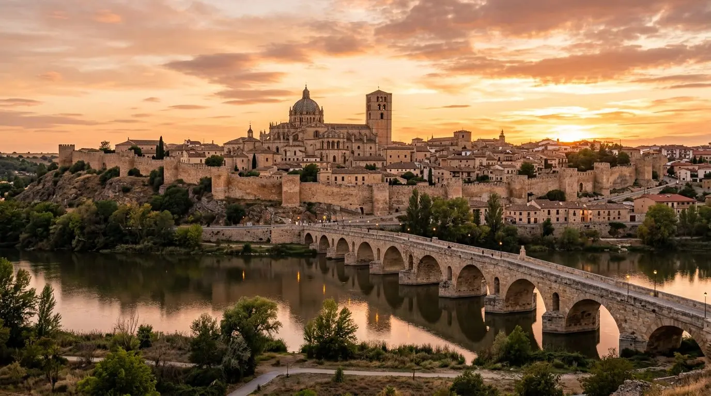
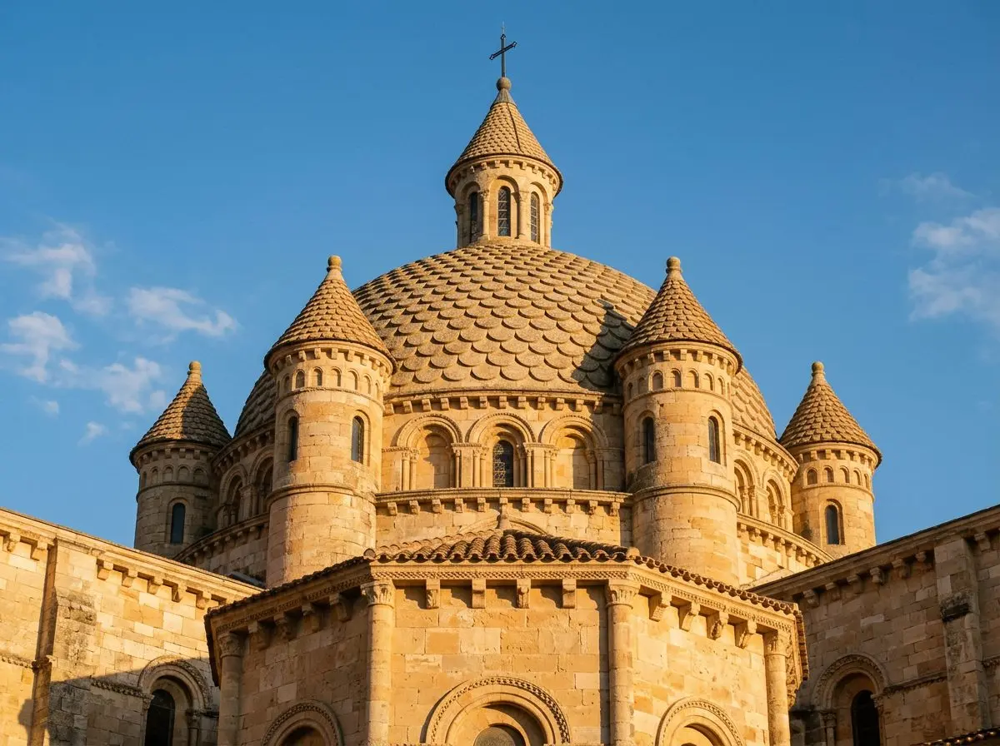
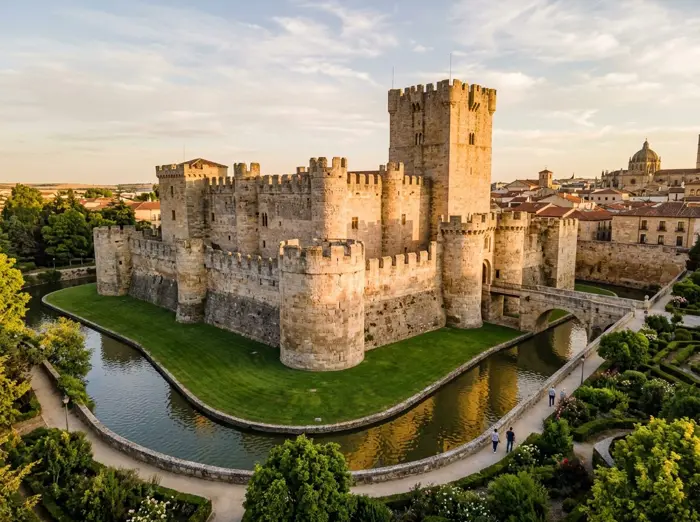
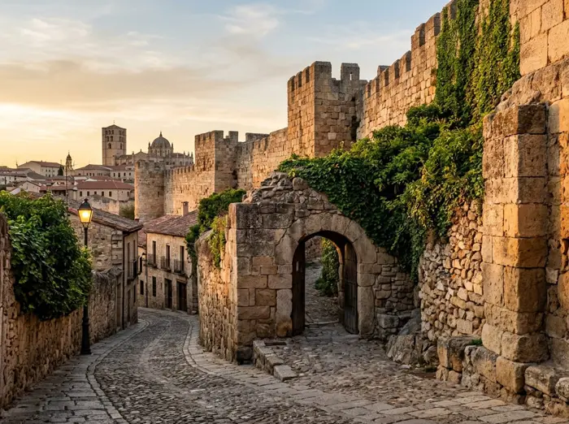
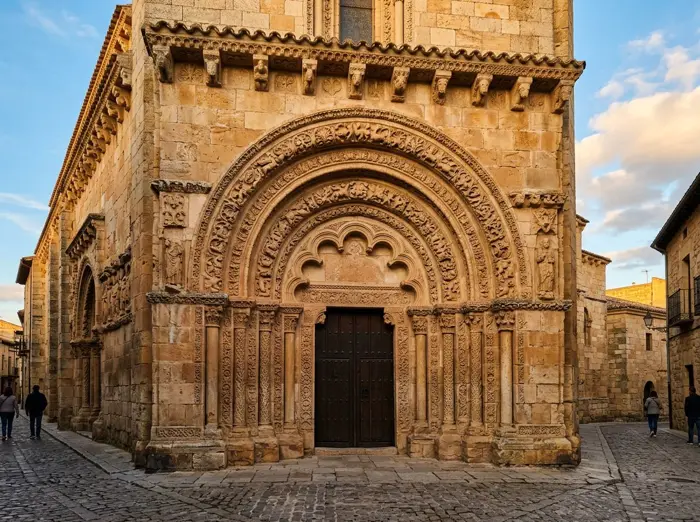
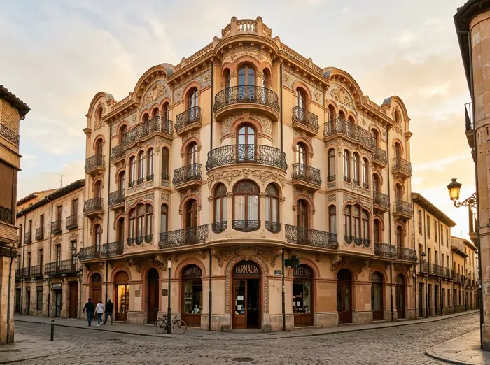
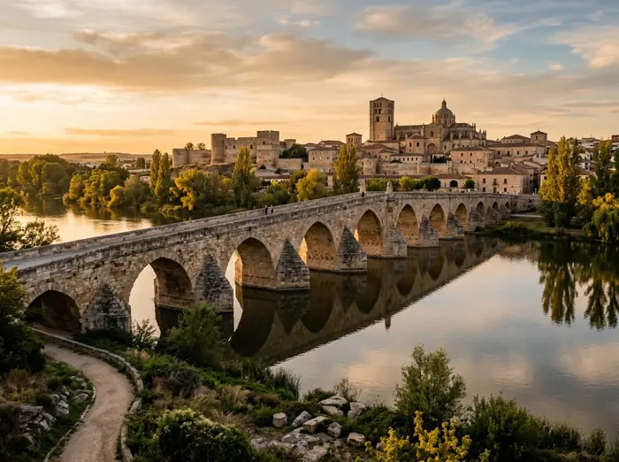

Tu guía personal por la ciudad del románico
Zamora,
contada piedra a piedra.
Olvida las placas frías. Apunta con el móvil a un monumento y escucha su historia como un podcast, o léela adaptada a ti.

Primer episodio · 1 minUna cúpula con escamas de dragónCómo funciona
Un guía que te acompaña, no un folleto.
Toda la información de cada monumento en un único lugar, contada con calma y a la medida de quien la escucha.
- 01
Mira
Reconocimiento visual
Encuadra una fachada, una portada o un puente. Tu guía identifica el monumento al instante, sin buscar nada.
- 02
Escucha
Formato podcast
Episodios breves narrados por capítulos, con transcripción en vivo. Pausa, avanza o cambia la velocidad mientras paseas.
- 03
Lee
Lectura adaptada
La misma historia en lectura fácil, general, en profundidad o para peques. Con letra grande y tipografía legible.
La ruta del románico
Seis paradas, mil años
25 min caminando · de la catedral al Duero
- 1Siglo XII
Catedral de Zamora
Levantada en apenas un cuarto de siglo, su cimborrio de escamas de piedra es una de las imágenes más reconocibles del románico español.
1 min · Una cúpula con escamas de dragón

2Siglo XI · 2 min a pieCastillo de Zamora
1 min · Desde lo alto de la Bien Cercada

3Siglo XI · 4 min a piePortillo de la Traición
1 min · Zamora no se ganó en una hora

4Siglos XII–XIII · 5 min a pieIglesia de la Magdalena
1 min · Una puerta para mirar despacio

5Principios del siglo XX · 6 min a pieZamora modernista
1 min · Cuando la piedra aprendió a curvarse

6Siglos XII–XIII · 8 min a piePuente de Piedra
1 min · Dieciséis arcos para cruzar el Duero
Lectura para todos
La misma historia, a tu medida.
Para quien aprende español, para quien prefiere frases claras, para el experto en arte y para los más pequeños. Cambia el nivel y mira cómo se transforma el texto de la catedral.
Catedral de Zamora
Esta es la Catedral de Zamora.
Es muy antigua. Se construyó hace casi 900 años.
Arriba tiene una cúpula. La cúpula tiene piedras con forma de escama, como un pez.
Dentro hay un museo con tapices. Los tapices son telas grandes con dibujos.
No se ganó Zamora en una hora
Ni se descubre en un folleto. Sal a la calle y apunta.
Abrir el escánerEscanear monumento
Apunta y descubre
Activa la cámara trasera y la ubicación. La app detecta el edificio que tienes delante y abre su historia.
Te pediremos permiso de cámara, ubicación y orientación del dispositivo.
Podcast
Episodios
Zamora a través de su historia · Zamorensis